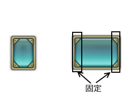
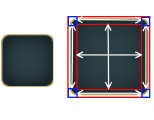

テクスチャについて¶
C#上でテクスチャリソースを扱うには、 こちら を参照ください。
ウィンドウシステムで使うテクスチャは、幾つかのテクスチャをアトラス化することによって 一つのメッシュとしてまとめてレンダリングできるようにしています。
また、アトラス化するときに、自動的に16bitに減色し、ディザリングも行ってくれます。
パーツ毎にディザリングを行うか/単純な色変換を行うか選択可能になっています。
■テクスチャパーツ
単純にパーツとも呼びます。 アトラス化する前のテクスチャをテクスチャパーツと呼びます。■テクスチャ
本ドキュメントでテクスチャと呼ぶときは、アトラス化された後のテクスチャを指します。 また、通常のテクスチャと明確に分けるために、テクスチャリソースと呼ぶこともあります。
テクスチャリソースを作る方法¶
- AssetBuilderを起動します。
- プロジェクト内のTextureResourceフォルダ(Assets/KsSoft/TextureResource)の直下に マルチID でフォルダを作ります。
- そのフォルダ内に、テクスチャを配置していきます。
- フォルダを選んで、[右クリック]→[Export]を選んでください(複数選択可能)。

これによって、100_000_00000.unity3dというアセットバンドルが、assetbundlesの下に生成されます。
■テクスチャ名の制約
アトラス化するテクスチャの名前は、拡張子を除いて5文字である必要があります。
これは、 FiveCC としてエンコーディングされるためです。
また、 マルチID ファイル名も使用できます。
BTN00.pgn
000_000_00010.png
定義ファイル @parts.def¶
@parts.defをテクスチャフォルダ内に置いておくと、定義ファイルに沿ってアトラス化してくれます。
単純なテキストファイルなので、お好みのエディタを使って編集してください。
ファイルのエンコーディングは、UTF8です。
リソース化するかどうかを選択
RESOURCE = ON/OFF;
次のように、RESOURCEを有効にすると、KsSoft/Resources/の下に次のようなファイルを生成します。
- 001_000_00000.spr
- 001_000_00000.tex
この二つのファイルを読み込むことによりアセットバンドル経由で読み込まず、リソース経由で読み込むことが可能になります。
RESOURCE = ON;
PART("partA") {
COLOR = 0.5,0.5,0,5,1;
};
PART("partB") {
COLOR = 0.5,0.5,0,5,1;
};
テクスチャフォーマット.¶
FORMAT = Texture Format;
DITHER = OFF;
FORMAT = RGBA32;
PART("partA") {
COLOR = 0.5,0.5,0,5,1;
};
PART("partB") {
DITHER = OFF;
COLOR = 0.5,0.5,0,5,1;
};
PNG,JPGファイルとしてアトラス化する方法.¶
幾つかのテクスチャを纏め(アトラス化)た後、テクスチャをアセットバンドルに変換するときに、テクスチャをPNGやJPGファイルに変換することが可能です。
ただし、実際にアプリケーションに組み込んで使うとき、これらテクスチャは32bitテクスチャとして展開されます。
メリットとデメリットを考えて使ってください。
| フォーマット | 実機上でのテクスチャフォーマット |
|---|---|
| FORMAT = PNG; | ARGB32 |
| FORMAT = JPG; | RGB24 |
利点
アセットサイズが小さくなる (=ダウンロードサイズが小さくなる)弱点
32bitテクスチャとして展開されるため、VRAMやメインメモリを圧迫します。
また、レンダリング速度も犠牲になります。
Note
特にメモリ帯域の狭いスマートフォン上では、著しくパフォーマンスが落ちるため、気を付けてください。
ディザリングのデフォルト値¶
DITHER = ON/OFF;
ディザリングをするかしないかは、パーツ毎に設定できます。
特に指定しないとき、どちらをデフォルト値にするか選択可能です。
この例ではpartAは、ディザリングを行い、partBは、ディザリングがキャンセルされます。
DITHER = ON;
PART("partA") {
COLOR = 0.5,0.5,0,5,1;
};
PART("partB") {
DITHER = OFF;
COLOR = 0.5,0.5,0,5,1;
};
シェーダの切り替え¶
SHADER = "SHADER PATH";
シェーダは、テクスチャリソース一つに対して、一つ指定できます。
シェーダはパーツ単位で切り替えることはできません。
ただし、テクスチャリソース単位では切り替えることが可能です。
SHADER = "Custom/Billboard";
PART("blck") {
COLOR = 1,1,1,1;
};
パーツ定義とエイリアス¶
パーツの定義は、次のような形で設定可能です。
PART(Texture part file name) {
Property 0;
Property 1;
：
Property n;
};
PART(Alias name,Texture part file name) {
Property 0;
Property 1;
：
Property n;
};
後者は同一のテクスチャパーツに対して名前をエイリアスすることによって、あたかも同一パーツで別のプロパティを持つパーツとして振る舞うことが可能です。
例えば、次のように定義すると、”BTN00”は、テクスチャカラーがそのまま出力されますが、”BTN01”は暗くレンダリングされます。
PART("BTN00") {
COLOR = 1,1,1,1;
};
PART("BTN01","BTN00") {
COLOR = 0.5,0.5,0.5,1;
};
パーツ定義プロパティ¶
COLOR = R,G,B,A;¶
カラーを変更します。
各色の要素は、0～1で指定します。
デフォルトは、1,1,1,1になっています。
DITHER = ON/OFF;¶
パーツをディザリングするかしないかを選択できます。
ディザリングをONにすると誤差拡散によってディザリングします。
デフォルトは、ONになっています。
NODIVIDE;¶
NOPATCH;¶
パーツを拡大表示するとき通常の拡大を行う。
パーツの分割はデフォルトは、NODIVIDEになっています。
DIVIDE3H = 左固定幅,右固定幅;¶
PATCH3H = 左固定幅,右固定幅;¶
パーツを拡大するとき、左右の指定幅だけ固定し、真ん中を拡大表示する。
PART("BTN01") {
DIVIDE3H = 24,24;
DITHER = ON;
};

DIVIDE3V = 上固定高,下固定高;¶
PATCH3V = 上固定高,下固定高;¶
パーツを拡大するとき、上下の指定高だけ固定し、真ん中を拡大表示する。
PART("BTN01") {
DIVIDE3V = 24,24;
DITHER = ON;
};
DIVIDE9 = 左上固定幅,左上固定高,右下固定幅,右下固定高;¶
PATCH9 = 左上固定幅,左上固定高,右下固定幅,右下固定高;¶
パーツを拡大するとき、4辺の指定サイズだけ固定し、真ん中を拡大表示する。
PART("FRAME") {
DIVIDE9 = 40,40,40,40;
DITHER = OFF;
};

インクルードパス¶
以下のパスにインクルードパスが、通っています。 インクルードファイルを作成する際は、ファイルをここに置いてください。
Assets/KsSoft/TextureResource/include
@parts.defをコンパイルするときにインクルードされるファイル¶
次のファイルは、@parts.defをコンパイルするときに、自動的にインクルードされます。 共通の設定は、このファイルに記述すると便利です。
Assets/KsSoft/TextureResource/include/tr.h
プリプロセッサ¶
C言語,C++言語とほぼ同じプリプロセッサが使えます。
| プリプロセッサ | 説明 |
|---|---|
| // コメント | ラインコメント |
| /* コメント */ | ブロックコメント |
| #include ファイル名 | ファイルをインクルードする |
| #define 記号定数の定義 | 記号定数の定義 |
| #define 関数マクロ | 関数マクロ |
| #if defined(記号定義) ～ #endif | 条件コンパイル |
| #ifdef ～ #endif | 条件コンパイル |
| #ifndef ～ #endif | 条件コンパイル |
| #pragma once | 多重インクルード防止 |
BuildTarget がマクロとして自動定義されています。
#if defined(StandaloneWindows)
MS-Windows
#else
Other
#endif